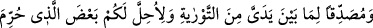
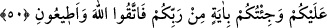
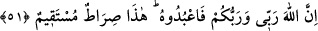

önceden yediğini ve sonradan yiyeceğini bildirirdi. Mektepteki çocuklara da evlerinde
ne yapıldığını, ne yemekte olduklarını ve neleri sakladıklarını haber verirdi. Bunun
üzerine çocuk eve gider, kendisi için saklanan şeyi ister, verilinceye kadar ağlar, sonra
ona çıkarıp vermeye mecbûr olurlardı. Çocuklarına: Şu sihirbazla oynamayın, derlerdi.
Sonra onları bir evde topladılar. Îsâ (a.s.) gidip onları sordu. “Onlar bu evde değil”
dediler. Dedi ki: “Peki bu evde kimler var?” dedi. Dediler ki: “Domuzlar var.” Bunun
üzerine Îsâ: “Öyleyse öyle olsunlar.” dedi. Onlar da domuz oldular.
“Elbette bunlarda” yani bu sayılan harikalarda ve büyük işlerde, “sizin için eğer
îman edicilerseniz” büyük “bir alâmet vardır.” Yani benim peygamberliğimin
doğruluğuna açık şekilde delâlet eden âyet vardır.
50. Benden önce gelen Tevrât’ı doğrulayıcı olarak ve size haram kılınan bazı
şeyleri de helal kılmak için gönderildim. Size Rabbinizden bir mûcize getirdim. O
halde Allah’dan korkun, bana da itâat edin.
“Benden önce gönderilen Tevrât’ı tasdik edici olarak (geldim.)” Yani size
gösterdiğim bu mûcizelerden başka, benden evvel gönderilmiş bulunan Tevrât’ı da
tasdik edici olarak geldim. Benim getirdiklerim ondakilere uygundur.
Yine ben, Mûsâ’nın şerîatında “size haram kılınan bazı şeyleri helal kılmak” yani
size ruhsat vermek için geldim.” Çünkü Mûsâ (a.s.)’ın şerîatında balık eti, deve eti,
yağlar, bağırsaklara bitişik yağlar ve tırnaklı hayvanların etleri haramdı. Îsâ (a.s.)
onlara balık etini, kuş etinin kemiksiz olanını helal kıldı.
“Yine size Rabbinizden (peygamberliğimi isbât eden) bir âyet getirdim.” Apaçık bir
burhân getirdim. Onu kabul etmemekten ve medlûlüne muhâlefetten sakının ve “artık
Allah’dan korkun ve bana itâat edin.” Allah’ın emriyle size emrettiğimi yapın,
yasakladığımdan kaçının. Çünkü “Şüphe yok ki Allah benim de Rabbimdir, sizin de
Rabbinizdir. Öyleyse O’na kulluk edin.” Şirk ile ona isyan etmeyin. “İşte, doğru yol
budur.” Yani Allah’a ve Rasûlü’ne îmanla itâat etmek doğru yolun tâ kendisidir. Bu yol,
gireni cennete götüren yoldur. Tüm peygamberlerin üzerinde ittifak ettikleri hak yoldur.
Dolayısıyla, Îsâ’nın da o peygamberlerden olduğunu gösteren açık bir delildir.
51. Allah, benim de Rabbim, sizin de Rabbinizdir. Öyle ise O’na kulluk edin. İşte